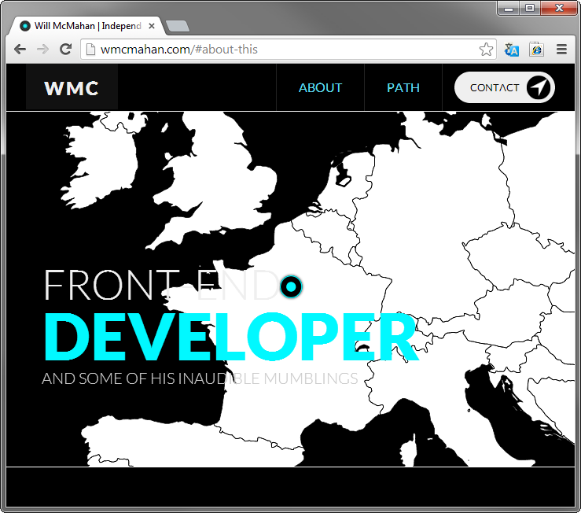
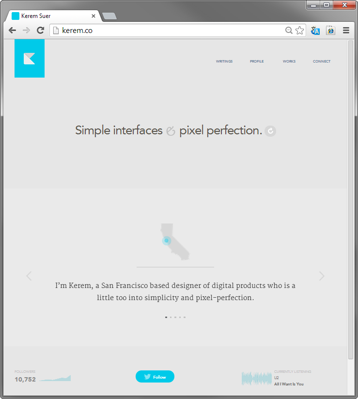
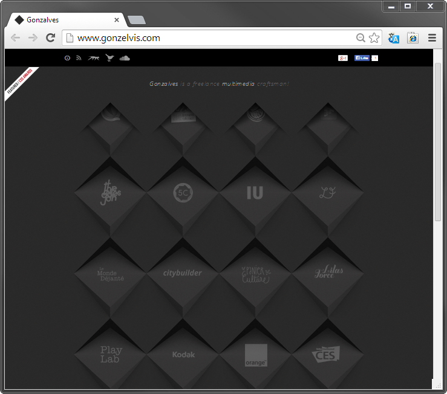

So I originally didn't really know what sitesto use for my blogpost. I ended deciding to pick three personal sites for freelancers to do my blogpost on. I thought I may one day want to have my own personal site for freelance work, so why not analyze three right now. The following three sites are my favorite.
WMC, Front-end Developer
User Experience
I really like the interaction with the map. i was able to easily access the freelancer's previous works. The only contact information avaliable was his twitter, but for the purposes of showcasing your work and providing contact information. There was enough on the site to fulfill it's purpose. Despite the map being pretty graphic intensive. The site has a mininalist approach putting only the most efficient things necessary to convey his expertise.
Design
I really like the three color scheme approach with white, black, aqua. There is very little text, making the design very clean. I also really like the way the map loads up in such a nice sequential way, instead of it loading up all at once.
Kerem, San Francisco-based Designer of Digital Products
User Experience
I am able to access and find everything on this site with ease. This site was alot easier to navigate than the first and has a much better contact page where I can input my data and job inquiry. While the first site only had works and contact, this site has a profile page, as well as a blogposts. I think these really had to a personal page to allow the potential customer to get a better understanding of who you are.
Design
Once again, this person uses a three color scheme of light blue, grey, and black. I like this color scheme is more than the first site. Another very minimalist design. As you can probably tell, I am a really big fan of minimalism. Despite not having any interactive stuff to click, there is at least a changing image in the middle of the front page, which gets rid of that static page feel.
Gonzalves, Freelance Multimedia craftsman!
User Experience
All of the sites features are unlabled icons. A little more difficult to navigate, but the pretty design and 3D ness of the icons make up for it. Contact, profile, and works are all easily accessible. Only thing i really didn't like was that contact was linked to outlook, which I don't use.
Design
This was more of a two tone color scheme from varying shares of black to grey. It would be nice if there was little more color. I really like how the blocks move when you move your mouse cursor over them. Interactive sites are just so intriguing to me.